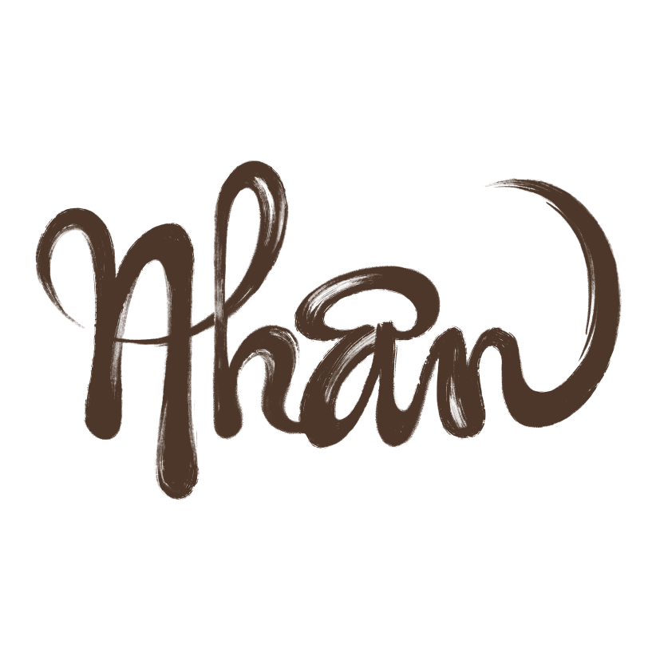
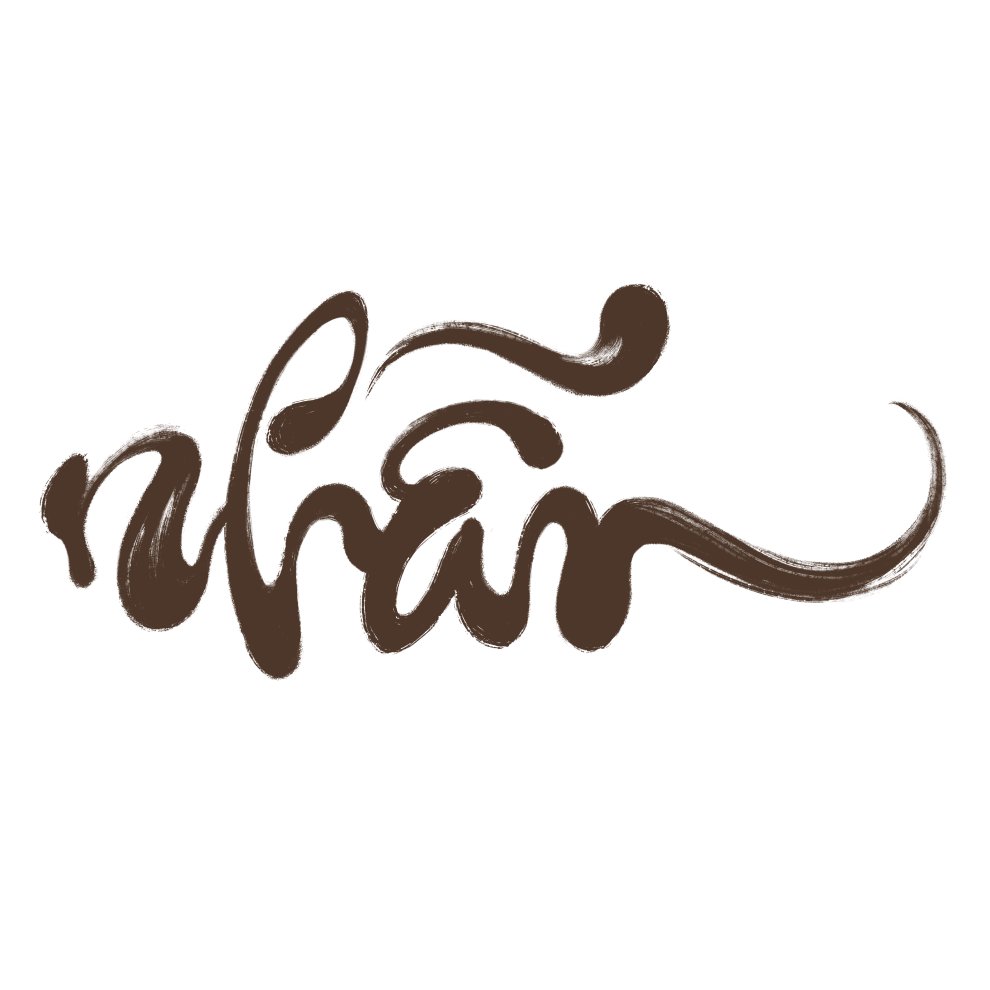
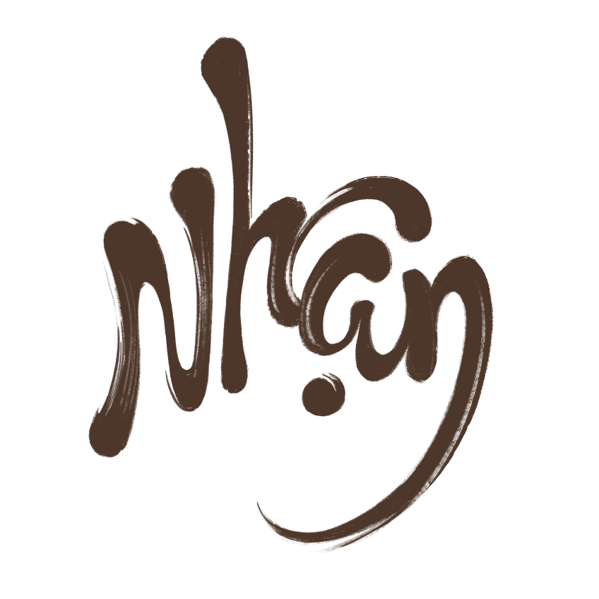

Con người ta hơn nhau là ở vế thứ hai - NGƯỜI. Còn phần CON thì ai cũng giống ai. Mất đi phần người, chúng ta chẳng khác nào loài cầm thú. Khổng Tử - người đề cao thuyết nhân trị đã chỉ ra cái đạo của người quân tử là:
Tu thân, tề gia, trị quốc, bình thiên hạ.
Có tu được thân, có rèn được mình thì mới mong thu xếp, cai quản được gia đình, có vậy mới mong lãnh đạo được đất nước, mới thu phục được lòng người, mới bình được thiên hạ. Nguyễn Trãi cũng đã từng nói “Đem đạo nghĩa để thắng hung tàn, Lấy chí nhân để thay cường bạo”. Nhân tâm có sức mạnh vô song, sẽ khuất phục được binh đao, thu phục được lòng người. Nhân cũng chính là
cái gốc của sự tồn tại, cũng là cái đạo trong
kinh doanh. Làm ăn chụp giật, lừa lọc, phi pháp sớm muộn gì rồi cũng đổ bể.
Ngược lại,
kinh doanh bằng cái tâm thực sự, làm ăn đàng hoàng, tuân thủ luật pháp, không mưu lợi cho riêng mình, ... chắc chắn sẽ thành công.
Vì lẽ đó, trong kinh doanh cũng nên lấy “nhân” làm “kế sâu rễ bền gốc”.
Gần nửa thế kỷ hình thành và phát triển đã
tạo lập nên một văn hoá Vietcombank với những đặc trưng riêng có mà một trong các đặc trưng
nổi bật là nét nhân văn. Người Vietcombank được tiếng là ứng xử với nhau có tình có nghĩa,
có trước có sau; trong quan hệ với khách hàng đối tác luôn đề cao lợi ích chung, không “lợi mình, hại người”; phương châm ứng xử là “luôn đặt mình vào vị trí của người khác”. Vietcombank cũng được tiếng là ngân hàng ít có sự tranh giành, bè phái, đấu đá nội bộ. Vietcombank cũng có tiếng là quý trọng con người, biết trọng dụng người tài, là ngân hàng có đội ngũ nhân viên
lành nghề, chuyên nghiệp, … Chữ “nhân” vì thế với Vietcombank thật đáng quý, đáng tự hào,
cần mãi lưu truyền.

Nhấn thì nên hiểu theo nghĩa thuần Việt:
điểm nhấn, dấu ấn, sự khác biệt, … Ai cũng biết bây giờ sự cạnh tranh không chỉ còn đơn thuần ở chất lượng sản phẩm, hàng hoá, ở dịch vụ đi kèm, mà hơn thế, phải cạnh tranh bằng sự khác biệt. Thiếu sự khác biệt, doanh nghiệp sẽ trở nên
nhờ nhoà và lẫn vào hàng vạn, hàng triệu
doanh nghiệp khác. Khác biệt hay là chết,
khác người để là mình, ... Thế đấy. Đâu là yếu tố tạo nên sự khác biệt của một doanh nghiệp?
Suy đến cùng đó chính là yếu tố con người.
Chỉ có con người mới tạo ra sự thay đổi, tạo ra những dấu ấn riêng, những cách thức suy nghĩ và hành động riêng cho cùng một sự việc,
tức là mới mang đến sự khác biệt.
Việt Nam là một thị trường tiềm năng cho
hoạt động ngân hàng nhưng hiện cũng đã có gần 100 ngân hàng lớn nhỏ các loại. Các dịch vụ na ná nhau, chiến lược rưa rứa nhau, … Cạnh tranh ngày càng nóng bỏng. Những khoảng cách về tiềm lực tài chính (vốn), công nghệ, mạng lưới, … sẽ dần bị san phẳng. Chúng ta sẽ đánh mất dần
vị thế hàng đầu nếu không có những điểm nhấn thực sự. Hơn lúc nào hết phải triệt để phát huy
lợi thế về thương hiệu và nguồn lực con người. Hãy nghĩ khác, hãy làm khác, hãy sáng tạo không ngưng nghỉ để tồn tại và phát triển. Dấu ấn riêng của thương hiệu Vietcombank chỉ có thể được
tạo dựng từ suy nghĩ và hành động của mỗi người Vietcombank chúng ta.

Nhẫn cũng là một đức tính cần thiết. Nó không có nghĩa thiển cận là nhẫn nhục, cam chịu mà là kiềm chế, là nhường nhịn, là kiên nhẫn. Các cụ ta đã dậy “một sự nhịn là chín sự lành”. Bình tĩnh bao giờ cũng đi cùng sáng suốt. Trái lại nóng nẩy thiếu kiềm chế bao giờ cũng dẫn đến xung đột, đổ vỡ, “cả giận mất khôn” mà. Trên bình diện
quốc gia, đôi khi nhờ chiến lược ngoại giao
mềm dẻo mà tránh được cảnh binh đao, đầu rơi máu chảy. Trong gia đình, nếu vợ chồng biết
tôn trọng nhường nhịn nhau thì sẽ tránh được
to tiếng, cãi vã, thượng cẳng tay, hạ cẳng chân.
Với doanh nghiệp cũng vậy thôi. Nếu ta luôn
bình tĩnh, kiên trì thì mọi việc sẽ luôn suôn sẻ, trên dưới đồng thuận, xuôi chèo mát mái.
Trong kinh doanh ai chẳng vì lợi ích của mình. Nhưng nếu ai cũng khăng khăng giành phần hơn thì sẽ chẳng có được cơ hội giao thương.
Nhẫn là biết tỉnh táo suy nghĩ sâu sắc, tính toán thiệt hơn, biết tiến nhưng đôi khi cũng chấp nhận lùi, vì lợi ích đôi bên. Thế mới là “cao thủ”.
Kinh doanh ngân hàng là hoạt động kinh doanh trong lĩnh vực dịch vụ bậc cao. Vì lẽ đó,
chất lượng dịch vụ cũng đòi hỏi cao hơn.
Chữ “nhẫn” với cánh ngân hàng nhà mình xem ra lại càng đáng quý. Ai biết gieo hạt vị tha, luôn giữ được hoà khí, luôn thân thiện cởi mở với khách hàng, biết điều hơn lẽ phải, sẵn sàng nhường nhịn, giúp đỡ đồng nghiệp, …. ắt sẽ thu hái
được quả thành công.

Cuối cũng là chữ Nhận, cũng với nghĩa thuần Việt. Thói đời người ta thường thích nhận hơn là cho. Sẽ ra sao nếu thế gian này ai cũng chỉ muốn nhận mà chẳng chịu cho ai cái gì bao giờ?
Sẽ là phi logic, là không hợp quy luật.
Cần phải tư duy lại. Hãy biết cho trước khi mong nhận, hãy cho để nhận, “give first be given later”. Doanh nghiệp phải đầu tư vốn liếng, tài sản,
công sức, trí tuệ, phải tạo ra giá trị gia tăng cho khách hàng mới mong thu được lợi nhuận.
Người làm công lẽ đương nhiên phải hao trí,
tốn lực làm việc thì mới mong được trả lương; phải hăng say cống hiến, có nhiều đóng góp
thì mới đáng được thưởng. Đơn giản là như vậy.
Có phải cho đi nhiều, đắng cay nhiều mới
thấy hết, thấm hết cái ngọt lành của sự nhận.
Với cách suy nghĩ như vậy, ta cũng dễ dàng hiểu rằng, ở đời chẳng có cái gì được cho không và “easy come, easy go” – cái gì dễ đến thì dễ đi. Vậy, chớ nên nhận những gì không thuộc về mình, những gì mà mình không xứng được hưởng. Đừng “nhận” trước để rồi phải lo nghĩ cách “cho” lại. Thay vào đó, hãy cho yêu thương để nhận về kính trọng, hãy cho cống hiến để nhận lấy niềm vui, hãy cho sáng tạo để nhận
đổi thay, hãy cho sẻ chia để nhận về lòng nhân ái …